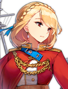

Враги и Мороженое

Суффолк |
Разведка сообщает, что новейшие боевые корабли Железной Крови собираются пройти через этот район. Если мы застанем их здесь врасплох, Королева, несомненно, вознаградит нас по возвращении! |
|
*Всхлипывает * Боевые корабли? Мы действительно сможем с ними справиться? Вода здесь такая холодная... У меня такое чувство, что все мое тело превращается в ледышку... Почему бы нам просто не поспешить обратно в порт? |
Норфолк |
|
| Суффолк |
Всё будет хорошо! Мы здесь только для того, чтобы провести разведку. Если начнется драка, с этим справятся наши старшие сестры. Они рядом и готовы оказать поддержку, в любой момент! Все, что я вижу, - это туман и лед... Не думаю, что поблизости есть кто-то еще. К тому же, какой бы военный корабль ни появился, они подожмут хвосты и убегут, как только узнают, что наши старшие сестры здесь, ха-ха! |
|
Однако, тебе не кажется, что как то это всё странно? Я была бы рада, если бы мы просто провели остаток дня, любуясь морем, а потом отправились домой ужинать... Хм? Подожди секунду... Кажется, мой радар улавил странный сигнал впереди... |
Норфолк |
|
| Суффолк |
Что? Дай мне посмотреть. Впереди обнаружены эсминцы Железной Крови! Может быть, это всего лишь несколько разведчиков? Немедленно докладывай Худ! |
|
Моя... моя антенна... замёрзла.... и... и превратилась... в мороженое... |
Норфолк |
|
| Суффолк |
Мы должны сдержать их. Это всего лишь несколько эсминцев массового производства... Мы должны справиться с ними! |
|
Мы... мы будем драться? *Всхлипывает* Я знала, что это случится... |
Норфолк |
Столкновение
| Норфолк |
Ух ты, Саффолк! Мы такие сильные! Мы победили стольких врагов одновременно! |
|
Не будь такой самоуверенной... Эти корабли явно были здесь, чтобы испытать нас... Мы еще даже не видели новый боевой корабль Железной Крови. У меня плохое предчувствие по этому поводу... |
Суффолк |
|
? ? ? ? |
Хехехе... Значит, засада все-таки была! Нас искали? |
|
Опасность!!! Враги по правому борту!!! Два больших военных корабля обнаружены на 220 градусов... Обнаружен новый линкор Железной Крови! Всем приготовиться к бою! |
Суффолк |
|
| Норфолк |
Ой ой... |
|
Ха-ха! Два маленьких крейсера? Готовитесь к атаке? Ха! Полагаю, я постараюсь насладиться этим настолько, насколько смогу! |
? ? ? ? |
|
Худ |
Не только два крейсера! Худ и Принц Уэльский из Королевского Флота, прибыли на подмогу! Давайте разберемся? |
Слава Королевского Флота
| Суффолк |
Старшая сестра! Ты наконец здесь! |
|
Вы хорошо поработали. Пришло время дать Железной Крови попробовать их собственное лекарство. Цельтесь в Бисмарк, их главный корабль! Огонь! |
Худ |
|
| Бисмарк ?? |
- "Слава Королевского Флота"? Это должно быть весело. Интересно, достаточно ли ты сильна, чтобы удовлетворить меня. |
Конфликт
| Бисмарк ?? |
У тебя неплохая огневая мощь, но против меня она бесполезна! |
Рейнский Бур
| Принц Уэльский  |
Всем кораблям сосредоточить огонь на корабле, скрывающемся сзади. Это Бисмарк, наша цель! |
|
Нас раскусили... Полагаю, этого следовало ожидать от Кинг Джордж V... |
Принц Ойген |
|
| Принц Уэльский |
Извини, но я Принц Уэльский... Ты меня с кем-то перепутала. |
|
Какая разница, для меня все вы, сестры, на одно лицо. Давай посмотрим, на что ты способна! |
Принц Ойген |
|
Бисмарк |
Что ж, похоже, драка неизбежна. Джот Дора! |
Конец и Начало
| Принц Уэльский |
Худ!!!! |
|
Ах... Эта сила... необычна... Невероятно, что ты нашла в себе столько сил… |
Худ |
|
| Бисмарк |
Нас раскрыли. Ойген, пора отступать. |
|
Ммм? Мы побеждаем! Зачем нам сейчас отступать? |
Принц Ойген |
|
| Бисмарк |
Пришлось применить наше секретное оружие. Оставаться тут дольше, значит раскрыть больше секретов. Следуй моему приказу и немедленно отступай! |
|
Черт... Ничего не поделаешь.... Береги себя, маленькая овечка. Мы еще увидимся с тобой. |
Принц Ойген |
|
| Худ |
... Почему... почему ты предала наш союз?.. |
| Бисмарк |
Честь и верность... Только обладая огромной силой, мы сможем по-настоящему спасти человечество. У нас... мы просто выбрали другой путь. Я не жду, что ты поймёшь. Только те, кто в будущем будут разбирать эти исторические события, смогут решить, кто прав, а кто виноват. Мой старый друг... Может мы встретимся в Валгалле... |
... ... ... |
?????? |
.. Человечество - такая интересная форма жизни... Сила, которую мы им дали, была только началом... История уже начала переписываться... |
|
Давай понаблюдаем еще некоторое время... Я возлагаю большие надежды на дальнейшее развитие событий... Если бы мы не предприняли эти шаги, возвращение в эту эпоху было бы бессмысленным, не так ли? Ахаха... |
?????? |
Мировой порядок рушится... Те, у кого есть сила, должны встать и бороться с потоками зла и бурными волнами истории. Однако известно, что сила порождает силу, что в свою очередь вызывает ещё более мощные волны... |